Education
- Sobre el 'nivel educativo' de los profecionales que respondieron la encuesta.
General Education
- column name : 'educacion'
Aspectos 'generales' sobre el nivel educativo de las personas que respondieron la encuesta. (NOMBRES, MUJERES, NO CONTESTO)
ed_levels = get_column_uniques(df, "educacion")
ed_levels
['Ed. Basica',
'Ed. Secundaria',
'Doctorado',
'Autodidacta',
'Ed. Universitaria',
'Master']
Unique 'education levels'.
- 'Master'
- 'Ed. Universitaria'
- 'Doctorado'
- 'Ed. Secundaria'
- 'Autodidacta'
- 'Ed. Basica'
# Replacing education column content to english translation.
ed_repl = {
"Ed. Basica": "Basic Education",
"Ed. Universitaria": "University Education",
"Autodidacta": "Autodidact",
"Doctorado": "Doctorate",
"Ed. Secundaria": "Middle School",
}
replace_column_content(df, "educacion", ed_repl)
df["educacion"].value_counts().keys()
Index(['University Education',
'Basic Education;Middle School;University Education',
'Basic Education;Middle School;University Education;Autodidact',
'University Education;Autodidact', 'Master', 'Middle School',
'Basic Education;Middle School',
'Basic Education;Middle School;Autodidact',
'University Education;Master', 'Middle School;Autodidact',
'Basic Education;Middle School;University Education;Master',
'University Education;Master;Autodidact', 'Autodidact',
'Basic Education;Middle School;University Education;Master;Autodidact',
'Master;Autodidact', 'Middle School;University Education;Master',
'Middle School;University Education',
'Middle School;University Education;Autodidact',
'Basic Education;Middle School;University Education;Master;Doctorate;Autodidact',
'Basic Education;Middle School;Master;Autodidact', 'Doctorate'],
dtype='object', name='educacion')
Education levels counts.
get_uniques_col_count(df, "educacion")
{'Middle School': 130,
'Autodidact': 94,
'Basic Education': 107,
'University Education': 279,
'Doctorate': 2,
'Master': 38}
Se puede ver que la cantidad de profecionales con nivel de educacion 'universitaria' excede ampliamente a los otros.
Carers or Specialties
We explore the 'carers or specialties' of the people who answered the survey.
- column name : 'carr_especialidades'
get_column_uniques(df, "carr_especialidades")
['Ing. Informática',
'Análisis de Sist.',
'Ing. Electrónica',
'Programación',
'Ing. Civil',
'Otras',
'Matemático',
'Diseño Gráfico',
'Ninguna',
'Otras Ing.']
carr_repl = {
"Matemático": "Mathematician",
"Ninguna": "None",
"Otras": "Others",
"Ing. Informática": "Eng. Computing",
"Diseño Gráfico": "Graphic design",
"Otras Ing.": "Other Eng.",
"Ing. Electrónica": "Eng. Electronics",
"Ing. Civil": "Eng. Civil",
"Análisis de Sist.": "System Analysis",
"Programación": "Programming",
}
replace_column_content(df, "carr_especialidades", carr_repl)
get_uniques_col_count(df, "carr_especialidades")
{'Eng. Computing': 169,
'Others Ing.': 6,
'Mathematician': 2,
'Eng. Electronics': 8,
'None': 16,
'Others': 32,
'Eng. Civil': 1,
'System Analysis': 151,
'Programming': 111,
'Graphic design': 13}
# Making a plot for this column.
fig = plt.figure(figsize=(9, 5))
# Declaring the plot.
carr_esp_df = make_df(df, "carr_especialidades", "categorias", "conteo")
print(carr_esp_df)
print("\n" * 4)
carr_esp_plot = carr_esp_df.plot(
kind="barh",
title="Careers or specialties.\n (GENERAL)",
legend=False,
# color=get_color("fasfasddf", "light"),
)
carr_esp_uniques = get_column_uniques(df, "carr_especialidades")
carr_esp_plot.set_yticks([k for k, v in enumerate(carr_esp_uniques)], minor=False)
carr_esp_plot.set_yticklabels(
[i for i in carr_esp_uniques],
fontdict=None,
minor=False,
)
carr_esp_plot.set_xlabel("\n\nTotal")
carr_esp_plot.set_ylabel("Careers or Specialties\n\n")
cat_values = [i for i in carr_esp_df.conteo.value_counts().keys()]
# Plot annotations.
for k, v in enumerate(cat_values):
carr_esp_plot.annotate(v, (v, k), va="center")
# nv_ed_plot.annotate(v, (v,k),va='center')
plt.show()
categorias conteo
0 Eng. Computing 169
1 Others Ing. 6
2 Mathematician 2
3 Eng. Electronics 8
4 None 16
5 Others 32
6 Eng. Civil 1
7 System Analysis 151
8 Programming 111
9 Graphic design 13
<Figure size 900x500 with 0 Axes>
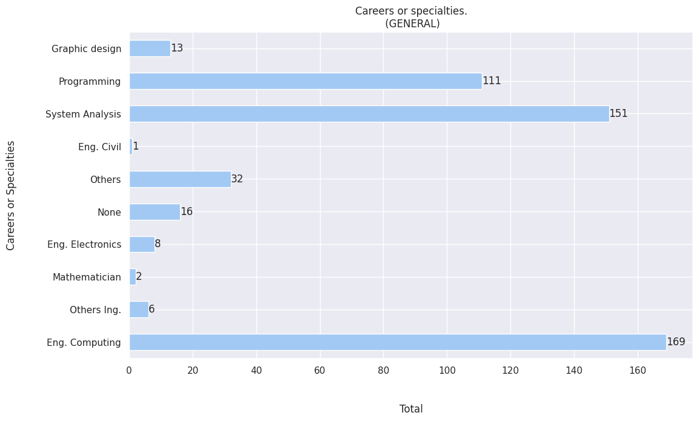
make_horizontal_bar(
df,
"carr_especialidades",
"Careers or specialties. \n (GENERAL)",
"Total ",
"Carreras / Especialidades",
False,
)
<Figure size 900x500 with 0 Axes>
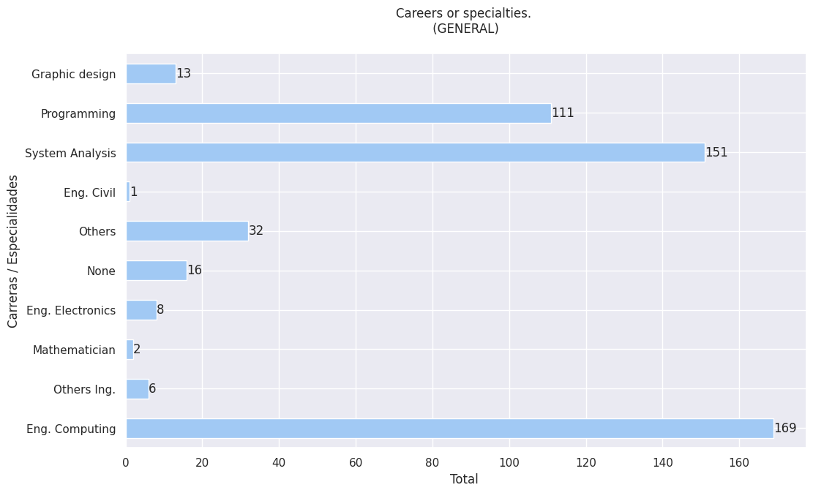
carr_esp_uniques = get_column_uniques(df, "carr_especialidades")
carr_esp_uniques
print(len(carr_esp_uniques))
10
Importance of Formal Education
We explore the views of the "importance of formal education" of the people who answered.
- column name : 'imp_ed_formal'
get_column_uniques(df, "imp_ed_formal")
['+ || -', 'CRITICO', 'MUY', 'NO', 'BASTANTE']
importance_repl = {
"MUY": "VERY",
"BASTANTE": "FAIRLY",
"CRITICO": "CRITICAL",
#'+ || -':'MORE or LESS'
}
replace_column_content(df, "imp_ed_formal", importance_repl)
# Ploting a figure for this column.
fig = plt.figure(figsize=(9, 5))
ax1 = plt.subplot(111)
# Plot
exp_df = df["imp_ed_formal"].value_counts()
exp_plot = exp_df.plot(
kind="barh",
title="Importance of formal education.\n (GENERAL)",
# color=get_color("Mafasdfadle", "light"),
)
exp_plot.set_xlabel("Total")
exp_plot.set_ylabel("Importance Level")
# Plot annotations.
for k, v in enumerate(df["imp_ed_formal"].value_counts().values):
exp_plot.annotate(v, (v, k), va="center")
plt.show()
# Ploting a figure for this column.
fig = plt.figure(figsize=(9, 5))
ax1 = plt.subplot(111)
# Plot
exp_df = df["imp_ed_formal"].value_counts(normalize=True)
exp_plot = exp_df.plot(
kind="barh",
title="Importance of formal education.\n (GENERAL)",
# color=get_color("Mafasdfadle", "light"),
)
exp_plot.set_xlabel("Total")
exp_plot.set_ylabel("Importance Level")
# Plot annotations.
for k, v in enumerate(df["imp_ed_formal"].value_counts(normalize=True).values):
exp_plot.annotate(get_percentage(v), (v, k), va="center")
plt.show()
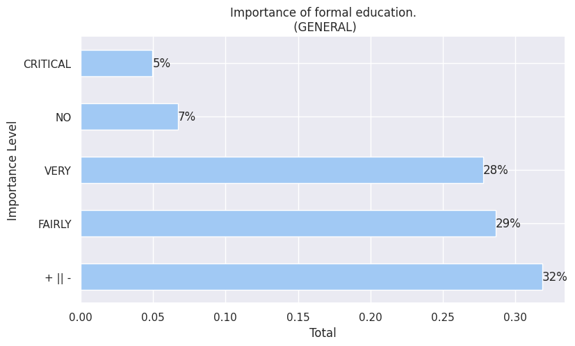
Educational Level x Gender
- We explore the "educational level" of the people who answered the survey by gender.
# Making groups by gender.
gen = df.groupby("genero")
# Print genders keys.
df["genero"].value_counts().keys()
Index(['HOMBRE', 'MUJER', 'NO COMPARTO'], dtype='object', name='genero')
gen_repl = {
"HOMBRE": "MAN",
"MUJER": "WOMAN",
"NO COMPARTO": "DONT SHARE",
}
replace_column_content(df, "genero", gen_repl)
Education Level - HOMBRE
- Education level for the group of MENS.
# Available Columns:
#'educación'
#'carreras_o_especialidades'
#'importancia_educación_formal'
# Print group 'HOMBRE' and the column 'educacion' with its value counts.
gen.get_group("MAN")["educacion"].value_counts()
educacion
University Education 117
Basic Education;Middle School;University Education 37
Basic Education;Middle School;University Education;Autodidact 31
University Education;Autodidact 23
Master 15
Middle School 10
Basic Education;Middle School 9
Basic Education;Middle School;Autodidact 8
Middle School;Autodidact 7
University Education;Master 6
Basic Education;Middle School;University Education;Master 4
Basic Education;Middle School;University Education;Master;Autodidact 2
Autodidact 2
University Education;Master;Autodidact 2
Middle School;University Education 1
Basic Education;Middle School;University Education;Master;Doctorate;Autodidact 1
Middle School;University Education;Autodidact 1
Basic Education;Middle School;Master;Autodidact 1
Middle School;University Education;Master 1
Doctorate 1
Name: count, dtype: int64
get_normal_uniques_col_count(gen.get_group("MAN"), "educacion")
{'Middle School': 113,
'Autodidact': 78,
'Basic Education': 93,
'University Education': 226,
'Doctorate': 2,
'Master': 32}
ed_uniques = get_column_uniques(df, "educacion")
# Making a plot for this 'relation'.
fig = plt.figure(figsize=(9, 5))
# Plot
ed_hombres_df = make_df(gen.get_group("MAN"), "educacion", "categories", "count")
ed_hombres_plot = ed_hombres_df.plot(
kind="barh",
title="Educational level of the respondents. \n (Men)",
fontsize=13,
legend=False,
color=get_color("Male", "light"),
)
print(ed_hombres_df)
ed_hombres_plot.set_yticklabels([v for k, v in enumerate(ed_uniques)])
ed_hombres_plot.set_xlabel("Total")
ed_hombres_plot.set_ylabel("Education Level")
# Plot annotations.
for k, v in enumerate(ed_hombres_df["count"]):
if v < 10:
# if count its less than 10, value will be painted in 'red'.
ed_hombres_plot.annotate(v, (v, k), va="center", color="black")
else:
# if count its greather than 10, value will be painted in 'blue'.
ed_hombres_plot.annotate(v, (v, k), va="center", color="black")
plt.show()
/home/torrezmn/Documentos/Data_Science/Enc_Devs_Py/Notebooks/toolkit/tools.py:184: SettingWithCopyWarning:
A value is trying to be set on a copy of a slice from a DataFrame.
Try using .loc[row_indexer,col_indexer] = value instead
See the caveats in the documentation: https://pandas.pydata.org/pandas-docs/stable/user_guide/indexing.html#returning-a-view-versus-a-copy
df[col] = df[col].fillna(False)
categories count
0 Middle School 113
1 Autodidact 78
2 Basic Education 93
3 University Education 226
4 Doctorate 2
5 Master 32
<Figure size 900x500 with 0 Axes>
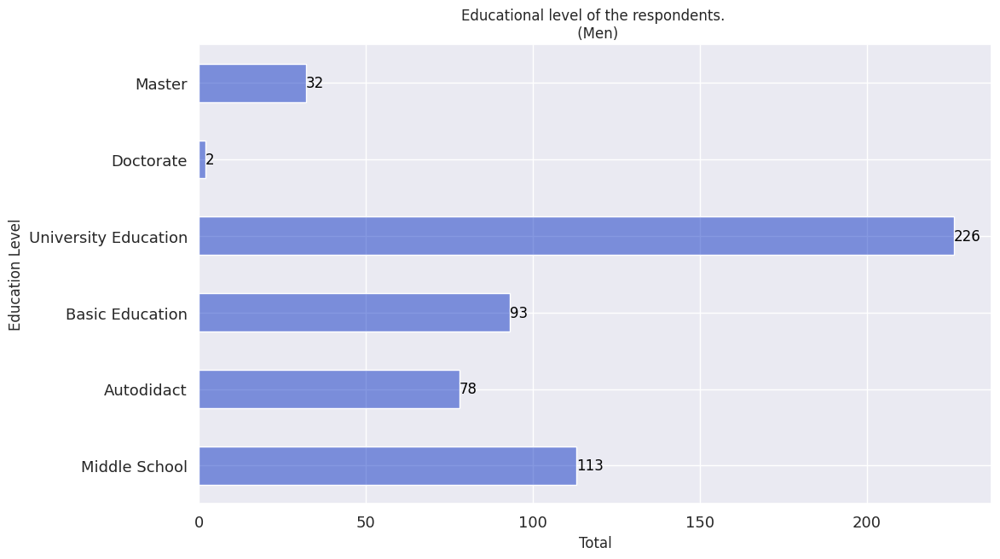
Careers or Specialties - HOMBRE
- Column name : 'carr_especialidades'
# Print 'value counts' of this column.
gen.get_group("MAN")["carr_especialidades"].value_counts()
carr_especialidades
Eng. Computing 92
System Analysis 52
Programming;System Analysis 22
Programming;Eng. Computing 17
Programming;System Analysis;Eng. Computing 15
Programming 15
None 13
System Analysis;Eng. Computing 7
Eng. Electronics 5
Programming;System Analysis;Others 5
Eng. Computing;Others 4
Others Ing. 4
System Analysis;Others 3
Others 3
Programming;Others 2
Programming;System Analysis;Graphic design 2
Programming;Graphic design 2
Programming;Eng. Computing;Others 2
Programming;System Analysis;Eng. Computing;Others 2
Programming;Graphic design;Others 2
Programming;System Analysis;Eng. Computing;Eng. Electronics 1
Programming;System Analysis;Eng. Computing;Graphic design;Others 1
System Analysis;Graphic design 1
Graphic design 1
System Analysis;Eng. Electronics 1
Programming;Others Ing.;Graphic design 1
Mathematician 1
Programming;System Analysis;Eng. Computing;Mathematician 1
System Analysis;None 1
System Analysis;Eng. Computing;Graphic design 1
Name: count, dtype: int64
# Making a plot for this column.
fig = plt.figure(figsize=(9, 5))
# Plot
carr_hombres_df = make_df(
gen.get_group("MAN"), "carr_especialidades", "Category", "count"
)
carr_hombres_plot = carr_hombres_df.plot(
kind="barh",
title="Carers or Specialties \n (Men)",
ylabel="Carers / Specialties",
xlabel="Total",
legend=False,
color=get_color("Male", "light"),
)
print(carr_hombres_df)
carr_hombres_plot.set_yticklabels(
[v for k, v in enumerate(carr_hombres_df["Category"])]
)
# Plot annotations.
for k, v in enumerate(carr_hombres_df["count"]):
if v < 10:
# If count its less than 10, value will be painted in 'red'.
carr_hombres_plot.annotate(v, (v, k), va="center", color="black")
else:
# If count its greather than 10, value will be painted in 'blue'.
carr_hombres_plot.annotate(v, (v, k), va="center", color="black")
plt.show()
/home/torrezmn/Documentos/Data_Science/Enc_Devs_Py/Notebooks/toolkit/tools.py:184: SettingWithCopyWarning:
A value is trying to be set on a copy of a slice from a DataFrame.
Try using .loc[row_indexer,col_indexer] = value instead
See the caveats in the documentation: https://pandas.pydata.org/pandas-docs/stable/user_guide/indexing.html#returning-a-view-versus-a-copy
df[col] = df[col].fillna(False)
Category count
0 Eng. Computing 143
1 Others Ing. 5
2 Mathematician 2
3 Eng. Electronics 7
4 None 14
5 Others 29
6 System Analysis 115
7 Programming 90
8 Graphic design 11
<Figure size 900x500 with 0 Axes>
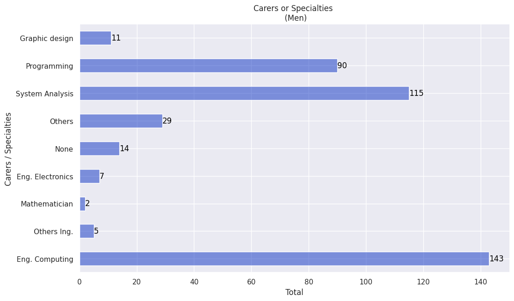
make_custom_horizontal_bar(
carr_hombres_df,
"carr_especialidades",
"\n Carers or Specialties \n (Men).",
"Total",
"Carers / Specialties",
False,
)
<Figure size 900x500 with 0 Axes>
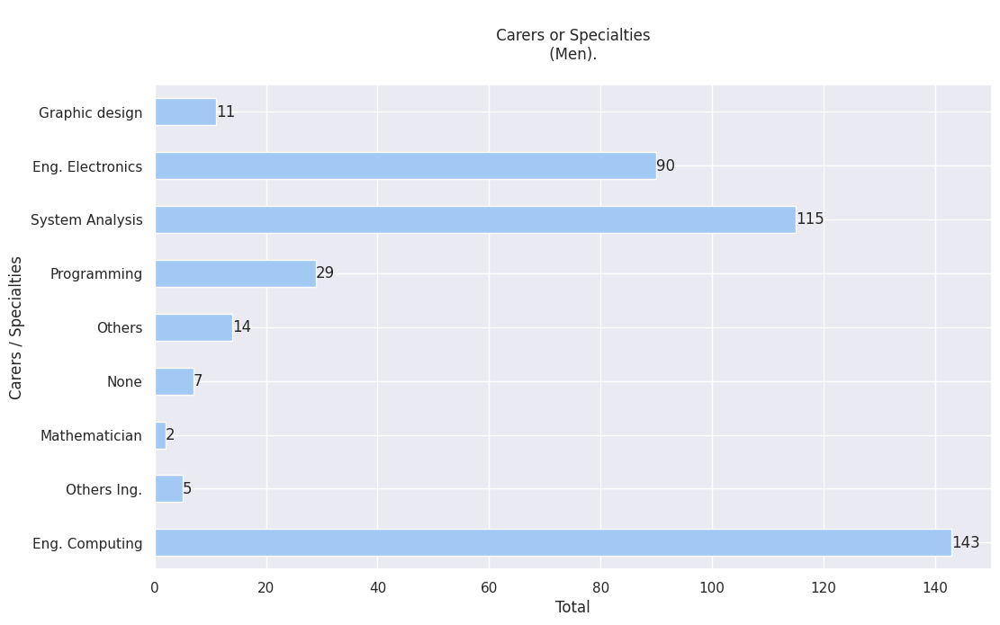
carr_hombres_df = make_df(
gen.get_group("MAN"), "carr_especialidades", "Category", "count"
)
print(carr_hombres_df)
Category count
0 Eng. Computing 143
1 Others Ing. 5
2 Mathematician 2
3 Eng. Electronics 7
4 None 14
5 Others 29
6 System Analysis 115
7 Programming 90
8 Graphic design 11
/home/torrezmn/Documentos/Data_Science/Enc_Devs_Py/Notebooks/toolkit/tools.py:184: SettingWithCopyWarning:
A value is trying to be set on a copy of a slice from a DataFrame.
Try using .loc[row_indexer,col_indexer] = value instead
See the caveats in the documentation: https://pandas.pydata.org/pandas-docs/stable/user_guide/indexing.html#returning-a-view-versus-a-copy
df[col] = df[col].fillna(False)
- NOTE: There is a theoretical or scope conflict within the content of this column. A career is an academic degree and a specialty is a branch of knowledge within a career. Within the column the category "programacion, ninguna, Otras" are presented. It makes no sense to consider them.
Importance of formal education. - HOMBRES
# Print the 'normal count' of values in the column.
df["imp_ed_formal"].value_counts()
imp_ed_formal
+ || - 109
FAIRLY 98
VERY 95
NO 23
CRITICAL 17
Name: count, dtype: int64
# Print the 'normal count' of values in the column.
print(df["imp_ed_formal"].value_counts(normalize=True))
imp_ed_formal
+ || - 0.318713
FAIRLY 0.286550
VERY 0.277778
NO 0.067251
CRITICAL 0.049708
Name: proportion, dtype: float64
print(percentage_to_normal(df["imp_ed_formal"].value_counts(normalize=True)))
imp_ed_formal
+ || - 31.9 %
FAIRLY 28.7 %
VERY 27.8 %
NO 6.7 %
CRITICAL 5.0 %
Name: proportion, dtype: object
make_normalized_df(df, "imp_ed_formal")
| total count | |
|---|---|
| categories | |
| + || - | 31.871345 |
| FAIRLY | 28.654971 |
| VERY | 27.777778 |
| NO | 6.725146 |
| CRITICAL | 4.970760 |
make_normalized_df(df, "imp_ed_formal")
| total count | |
|---|---|
| categories | |
| + || - | 31.871345 |
| FAIRLY | 28.654971 |
| VERY | 27.777778 |
| NO | 6.725146 |
| CRITICAL | 4.970760 |
# Any null value?
df["imp_ed_formal"].isna().sum()
0
# Making a chart for this column.
fig = plt.figure(figsize=(5, 10))
ax1 = plt.subplot(111)
# Plot
import_df = gen.get_group("MAN")["imp_ed_formal"].value_counts(normalize=True)
import_plot = import_df.plot(
kind="pie",
title="Importance of formal education. \n (Men)",
autopct="%1.1f%%",
ylabel="",
xlabel="",
explode=explode_pie(import_df.size),
)
plt.show()
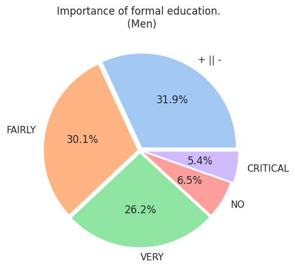
EDUCACION - MUJERES
The 'education' of the womens.
#'educación'
#'carreras_o_especialidades'
#'importancia_educación_formal'
- Grouped in this way, the content of the column makes no sense. We will try to separate each "category".
gen.get_group("WOMAN")["educacion"].value_counts()
educacion
University Education 29
University Education;Autodidact 5
Basic Education;Middle School;University Education 5
Basic Education;Middle School;University Education;Autodidact 3
University Education;Master 2
Master 2
Master;Autodidact 1
Basic Education;Middle School 1
Middle School 1
Name: count, dtype: int64
print("WIMAN education levels.")
make_normalized_df(gen.get_group("WOMAN"), "educacion")
WIMAN education levels.
| total count | |
|---|---|
| categories | |
| University Education | 57.142857 |
| Middle School | 12.987013 |
| Autodidact | 11.688312 |
| Basic Education | 11.688312 |
| Master | 6.493506 |
fig = plt.figure(figsize=(9, 5))
ed_mujeres_df = make_df(gen.get_group("WOMAN"), "educacion", "categories", "count")
ed_mujeres_plot = ed_mujeres_df.plot(
kind="barh",
title="Level of Education \n Woman",
legend=False,
color=get_color("Female", "light"),
)
print(ed_mujeres_df)
ed_mujeres_plot.set_yticklabels([v for k, v in enumerate(ed_mujeres_df["categories"])])
ed_mujeres_plot.set_xlabel("Total")
ed_mujeres_plot.set_ylabel("Education Level")
for k, v in enumerate([i for i in ed_mujeres_df["count"]]):
if v < 10:
ed_mujeres_plot.annotate(v, (v, k), va="center", color="black")
else:
ed_mujeres_plot.annotate(v, (v, k), va="center", color="black")
plt.show()
/home/torrezmn/Documentos/Data_Science/Enc_Devs_Py/Notebooks/toolkit/tools.py:184: SettingWithCopyWarning:
A value is trying to be set on a copy of a slice from a DataFrame.
Try using .loc[row_indexer,col_indexer] = value instead
See the caveats in the documentation: https://pandas.pydata.org/pandas-docs/stable/user_guide/indexing.html#returning-a-view-versus-a-copy
df[col] = df[col].fillna(False)
categories count
0 Middle School 10
1 Autodidact 9
2 Basic Education 9
3 University Education 44
4 Master 5
<Figure size 900x500 with 0 Axes>
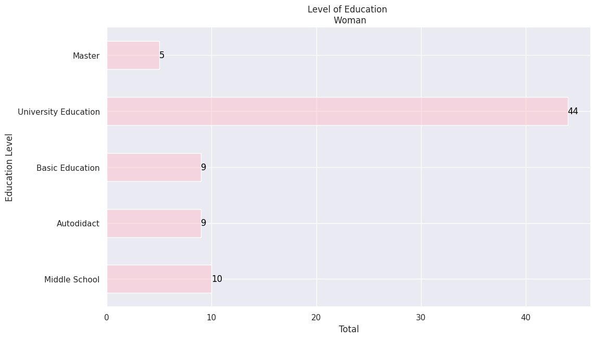
Carreras o especialidades. - MUJERES
- column name : 'carr_especialidades'
fig = plt.figure(figsize=(9, 5))
carr_mujeres_df = make_df(
gen.get_group("WOMAN"), "carr_especialidades", "categories", "count"
)
carr_mujeres_plot = carr_mujeres_df.plot(
kind="barh",
ylabel="Carers / Specialties",
title="Careers or specialties. \n Woman",
legend=False,
color=get_color("Female", "light"),
)
carr_mujeres_plot.set_xlabel("Total")
carr_mujeres_plot.set_ylabel("Careers")
print(carr_mujeres_df)
carr_mujeres_plot.set_yticklabels(
[v for k, v in enumerate(carr_mujeres_df["categories"])]
)
for k, v in enumerate([i for i in carr_mujeres_df["count"]]):
carr_mujeres_plot.annotate(v, (v, k), va="center", color="black")
plt.show()
categories count
0 Eng. Computing 22
1 Others 2
2 System Analysis 27
3 Programming 15
4 Graphic design 1
/home/torrezmn/Documentos/Data_Science/Enc_Devs_Py/Notebooks/toolkit/tools.py:184: SettingWithCopyWarning:
A value is trying to be set on a copy of a slice from a DataFrame.
Try using .loc[row_indexer,col_indexer] = value instead
See the caveats in the documentation: https://pandas.pydata.org/pandas-docs/stable/user_guide/indexing.html#returning-a-view-versus-a-copy
df[col] = df[col].fillna(False)
<Figure size 900x500 with 0 Axes>
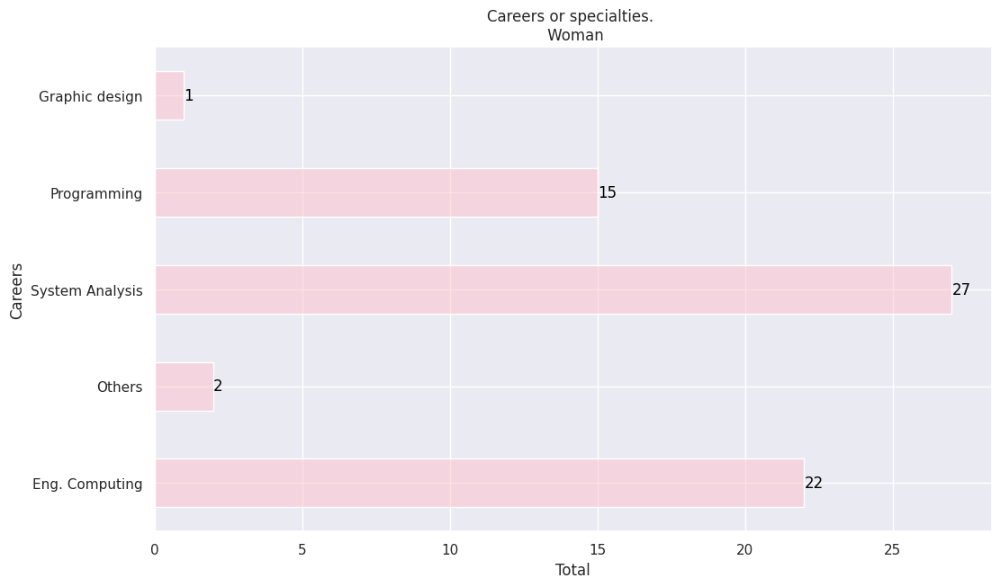
Importancia de la educacion formal. - MUJERES
- column name : 'imp_ed_formal'
[i for i in gen.groups.keys()]
['DONT SHARE', 'MAN', 'WOMAN']
fig = plt.figure(figsize=(9, 5))
muj_import_df = gen.get_group("WOMAN")["imp_ed_formal"].value_counts()
muj_import_plot = muj_import_df.plot(
kind="barh",
title="Importance of formal education. \n Woman",
color=get_color("Female", "light"),
)
muj_import_plot.set_xlabel("Total")
muj_import_plot.set_ylabel("Importance Level")
for k, v in enumerate(gen.get_group("WOMAN")["imp_ed_formal"].value_counts().values):
muj_import_plot.annotate(v, (v, k), va="center", color="black")
plt.show()
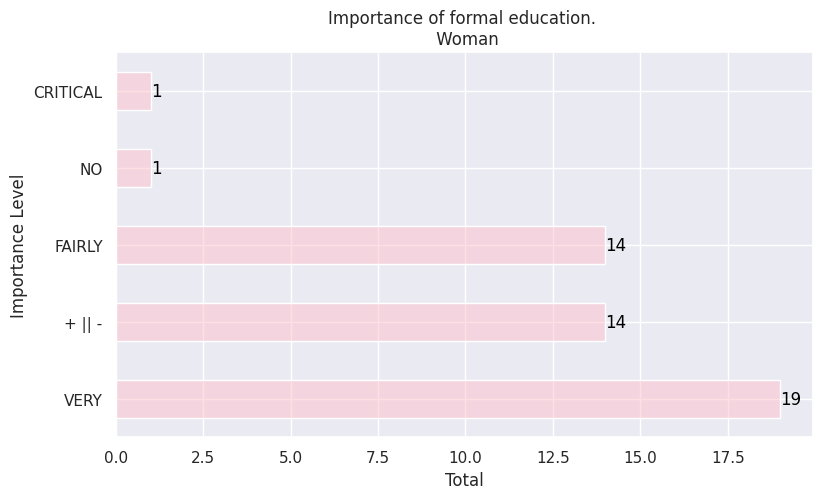
EDUCACION - NO COMPARTO
#'educación'
#'carreras_o_especialidades'
#'importancia_educación_formal'
gen.groups.keys()
dict_keys(['DONT SHARE', 'MAN', 'WOMAN'])
fig = plt.figure(figsize=(9, 5))
ed_no_comp_df = make_df(gen.get_group("DONT SHARE"), "educacion", "categories", "count")
ed_no_comp_plot = ed_no_comp_df.plot(
kind="barh",
title="Education Levels \n NO COMPARTO",
color=get_color("I do not share.", "light"),
legend=False,
)
ed_no_comp_plot.set_xlabel("Total")
ed_no_comp_plot.set_ylabel("Education Level")
print(ed_no_comp_df)
ed_no_comp_plot.set_yticklabels([v for k, v in enumerate(ed_no_comp_df["categories"])])
for k, v in enumerate([i for i in ed_no_comp_df["count"]]):
ed_no_comp_plot.annotate(v, (v, k), va="center", color="blue")
plt.show()
categories count
0 Autodidact 2
1 Basic Education 2
2 University Education 4
3 Middle School 3
/home/torrezmn/Documentos/Data_Science/Enc_Devs_Py/Notebooks/toolkit/tools.py:184: SettingWithCopyWarning:
A value is trying to be set on a copy of a slice from a DataFrame.
Try using .loc[row_indexer,col_indexer] = value instead
See the caveats in the documentation: https://pandas.pydata.org/pandas-docs/stable/user_guide/indexing.html#returning-a-view-versus-a-copy
df[col] = df[col].fillna(False)
<Figure size 900x500 with 0 Axes>
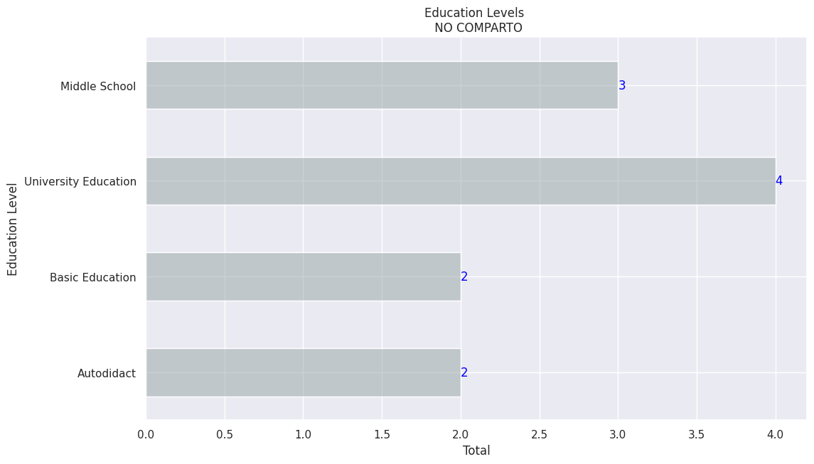
Carreras o especialidades. - NO DEFINIDO
fig = plt.figure(figsize=(9, 5))
carr_no_comp_df = make_df(
gen.get_group("DONT SHARE"), "carr_especialidades", "categoria", "cuenta"
)
carr_no_comp_plot = carr_no_comp_df.plot(
kind="barh",
title="Carers or specialties. \n I do not share.",
color=get_color("I do not share.", "light"),
legend=False,
)
carr_no_comp_plot.set_xlabel("Total")
carr_no_comp_plot.set_ylabel("Carrers / Specialties")
print(carr_no_comp_df)
carr_no_comp_plot.set_yticklabels(
[v for k, v in enumerate(carr_no_comp_df["categoria"])]
)
for k, v in enumerate([i for i in carr_no_comp_df["cuenta"]]):
carr_no_comp_plot.annotate(v, (v, k), va="center")
plt.show()
categoria cuenta
0 Eng. Computing 1
1 Others Ing. 1
2 Eng. Electronics 1
3 None 1
4 Eng. Civil 1
5 System Analysis 3
6 Programming 2
7 Graphic design 1
/home/torrezmn/Documentos/Data_Science/Enc_Devs_Py/Notebooks/toolkit/tools.py:184: SettingWithCopyWarning:
A value is trying to be set on a copy of a slice from a DataFrame.
Try using .loc[row_indexer,col_indexer] = value instead
See the caveats in the documentation: https://pandas.pydata.org/pandas-docs/stable/user_guide/indexing.html#returning-a-view-versus-a-copy
df[col] = df[col].fillna(False)
<Figure size 900x500 with 0 Axes>
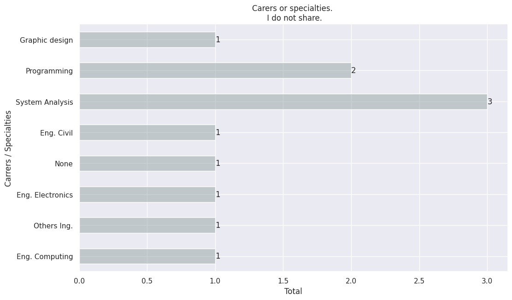
Importancia de la educacion formal. - NO DEFINIDO
fig = plt.figure(figsize=(9, 5))
imp_ed_no_comp_df = gen.get_group("DONT SHARE")["imp_ed_formal"].value_counts()
imp_ed_no_comp_plot = imp_ed_no_comp_df.plot(
kind="barh",
title="Importance of formal education. \n I do not share.",
color=get_color("I do not share.", "light"),
)
imp_ed_no_comp_plot.set_xlabel("Total")
imp_ed_no_comp_plot.set_ylabel("Carrers / Specialties")
for k, v in enumerate(
[i for i in gen.get_group("DONT SHARE")["imp_ed_formal"].value_counts().values]
):
imp_ed_no_comp_plot.annotate(v, (v, k), va="center", color="blue")
plt.show()
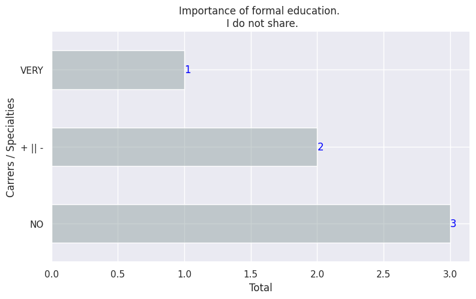
df.columns
Index(['marca_temp', 'modalidad', 'trabajo', 'tipo_de_trabajo', 'devops',
'programar_x_trabajo', 'exp_en_IT', 'exp_en_programacion',
'1_linea_de_codigo', 'educacion', 'carr_especialidades',
'imp_ed_formal', 'genero', 'edad_actual', 'salario_mensual',
'prog_script_leng', 'lib_frameworks', 'otras_lib_frameworks', 'db',
'plataformas', 'leng_fav', 'leng_mas_odiado', 'fram_fav',
'fram_mas_odiado', 'herramientas'],
dtype='object')
IMPORTANCIA DE LA EDUCACION FORMAL - COMPARATIVAS
columna --------> 'imp_ed_formal'
generos = gen.groups.keys()
plt.figure(figsize=(4, 20), dpi=80)
<Figure size 320x1600 with 0 Axes>
<Figure size 320x1600 with 0 Axes>
for k, v in enumerate(generos):
# plt.subplot(2, 2, k + 1)
ie_df = gen.get_group(v)["imp_ed_formal"].value_counts(normalize=True)
ie_plot = ie_df.plot(
kind="pie",
ylabel="",
autopct="%1.1f%%",
explode=explode_pie(ie_df.size),
textprops={"fontsize": 12},
title=f"Importance of formal education by Gender.\n ({v})",
)
plt.show()
# plt.subplots_adjust(left=0.1, bottom=0.1, right=0.9, top=0.3, wspace=0.4, hspace=0.4)
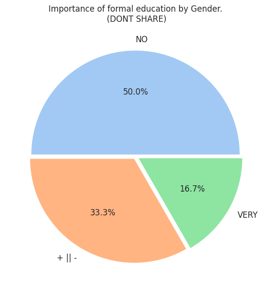
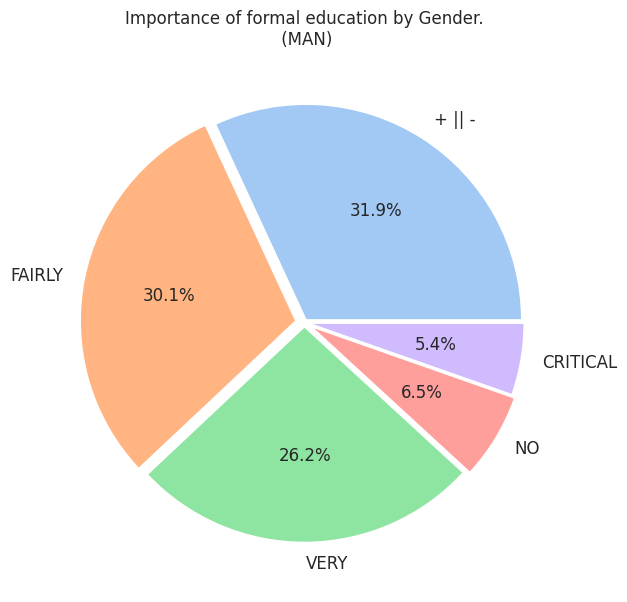
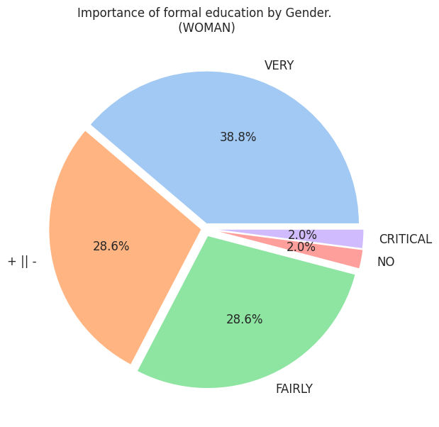
for k, v in enumerate(generos):
ie_df = gen.get_group(v)["imp_ed_formal"].value_counts(normalize=True)
print(f"Gender : {v}\nImportance of formal education.")
print("=" * 33)
print(percentage_to_normal(ie_df))
print("\n" * 4)
Gender : DONT SHARE
Importance of formal education.
=================================
imp_ed_formal
NO 50.0 %
+ || - 33.3 %
VERY 16.7 %
Name: proportion, dtype: object
Gender : MAN
Importance of formal education.
=================================
imp_ed_formal
+ || - 31.9 %
FAIRLY 30.1 %
VERY 26.2 %
NO 6.5 %
CRITICAL 5.4 %
Name: proportion, dtype: object
Gender : WOMAN
Importance of formal education.
=================================
imp_ed_formal
VERY 38.8 %
+ || - 28.6 %
FAIRLY 28.6 %
NO 2.0 %
CRITICAL 2.0 %
Name: proportion, dtype: object
Education
(Column name 'educacion'.)
group_config = {
"title": "educacion by Gender \n",
"c1_label": "Hombres",
"c2_label": "Mujeres",
"xlabel": "\n educacion level. \n",
"ylabel": "\n Total count.",
}
make_horizontal_grouped_chart(
df,
gen.get_group("MAN").fillna(""),
gen.get_group("WOMAN").fillna(""),
"educacion",
get_column_uniques(df, "educacion"),
group_config,
)
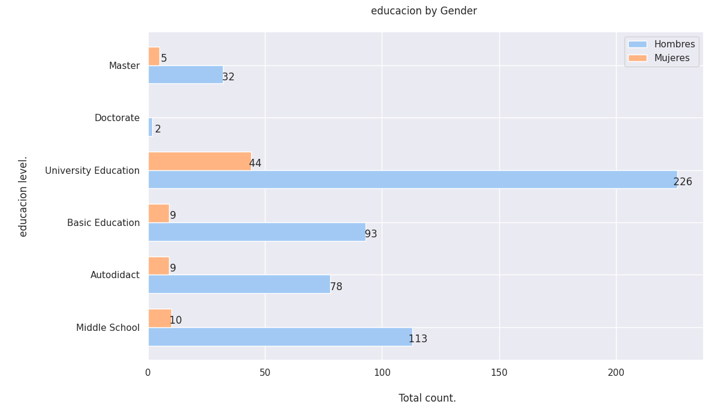
Carreras o especialidades.
- Column name 'carr_especialidades'.
carr_especialidades
group_config = {
"title": "carr_especialidades by Gender \n",
"c1_label": "Hombres",
"c2_label": "Mujeres",
"xlabel": "\n carr_especialidades level. \n",
"ylabel": "\n Total count.",
}
make_horizontal_grouped_chart(
df,
gen.get_group("MAN").fillna(""),
gen.get_group("WOMAN").fillna(""),
"carr_especialidades",
get_column_uniques(df, "carr_especialidades"),
group_config,
)
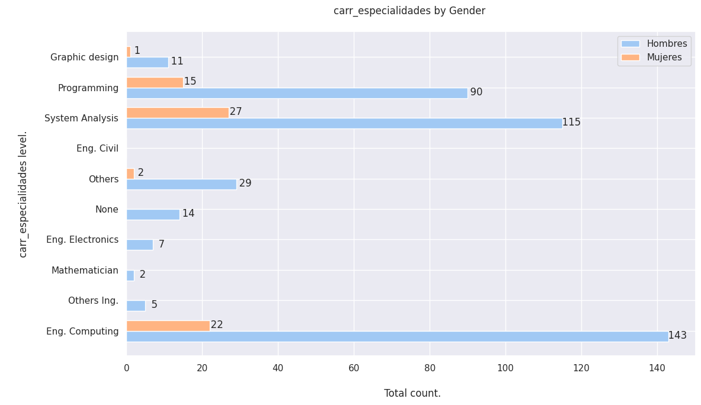
edad_actual
group_config = {
"title": "edad_actual by Gender \n",
"c1_label": "Hombres",
"c2_label": "Mujeres",
"xlabel": "\n edad_actual level. \n",
"ylabel": "\n Total count.",
}
make_vertical_grouped_chart(
df,
gen.get_group("MAN").fillna(""),
gen.get_group("WOMAN").fillna(""),
"edad_actual",
get_column_uniques(df, "edad_actual"),
group_config,
)

print("HOMBRES ", gen.get_group("MAN").fillna("")["edad_actual"].value_counts())
print("\n" * 3)
print("MUJERES ", gen.get_group("WOMAN").fillna("")["edad_actual"].value_counts())
HOMBRES edad_actual
30-34 91
25-29 83
35-39 43
20-24 34
40-44 15
15-19 5
45-49 3
50-54 3
55-59 2
Name: count, dtype: int64
MUJERES edad_actual
30-34 22
25-29 15
35-39 6
20-24 4
55-59 1
40-44 1
Name: count, dtype: int64
salario_mensual
group_config = {
"title": "salario_mensual by Gender \n",
"c1_label": "Hombres",
"c2_label": "Mujeres",
"xlabel": "\n salario_mensual level. \n",
"ylabel": "\n Total count.",
}
make_horizontal_grouped_chart(
df,
gen.get_group("MAN").fillna(""),
gen.get_group("WOMAN").fillna(""),
"salario_mensual",
get_column_uniques(df, "salario_mensual"),
group_config,
)
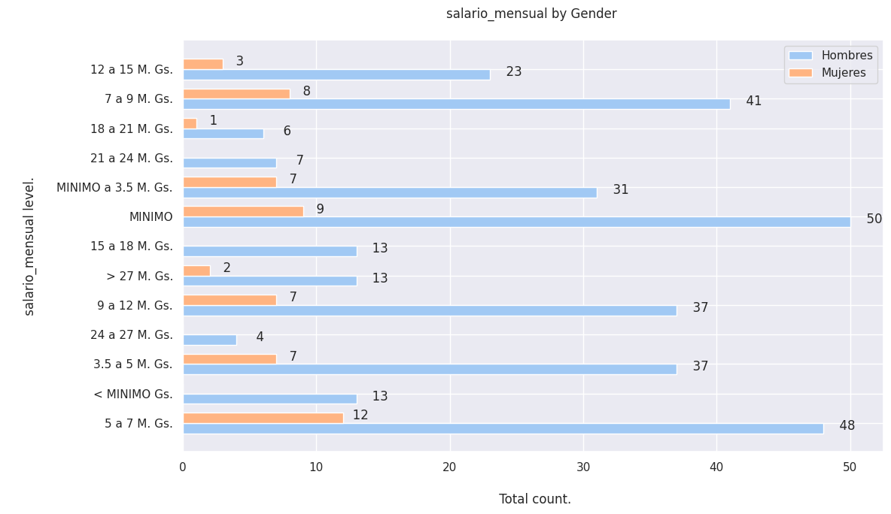
TEST COMPARATIVE CHARTS
for i in df.columns:
print(i)
marca_temp
modalidad
trabajo
tipo_de_trabajo
devops
programar_x_trabajo
exp_en_IT
exp_en_programacion
1_linea_de_codigo
educacion
carr_especialidades
imp_ed_formal
genero
edad_actual
salario_mensual
prog_script_leng
lib_frameworks
otras_lib_frameworks
db
plataformas
leng_fav
leng_mas_odiado
fram_fav
fram_mas_odiado
herramientas
get_column_uniques(df, "trabajo")
['Internacional', 'Ambas', 'Nacional (Paraguay)']
gen.groups.keys()
dict_keys(['DONT SHARE', 'MAN', 'WOMAN'])
count_modalidad_hombres = get_uniques_col_count(gen.get_group("MAN"), "modalidad")
count_modalidad_mujeres = get_uniques_col_count(gen.get_group("WOMAN"), "modalidad")
modalidad_labels = get_column_uniques(df, "modalidad")
print("MODALIDAD LABELS -> ", modalidad_labels)
print("MOD COUNT HOMBRES -< ", count_modalidad_hombres)
print("MOD COUNT MUJERES -< ", count_modalidad_mujeres)
MODALIDAD LABELS -> ['Presencial', 'Ninguna', 'Hibrído', 'Remoto']
MOD COUNT HOMBRES -< {'Presencial': 60, 'Ninguna': 8, 'Hibrído': 94, 'Remoto': 117}
MOD COUNT MUJERES -< {'Presencial': 18, 'Hibrído': 11, 'Remoto': 20}
men_val = [count_modalidad_hombres.get(i, 0) for i in modalidad_labels]
women_val = [count_modalidad_mujeres.get(i, 0) for i in modalidad_labels]
men_val
[60, 8, 94, 117]
women_val
[18, 0, 11, 20]
labels = get_column_uniques(df, "modalidad")
men_means = [20, 34, 30, 35, 27]
women_means = [25, 32, 34, 20, 25]
x = np.arange(len(labels)) # the label locations
width = 0.35 # the width of the bars
fig, ax = plt.subplots()
rects1 = ax.bar(x - width / 2, men_val, width, label="Men")
rects2 = ax.bar(x + width / 2, women_val, width, label="Women")
# Add some text for labels, title and custom x-axis tick labels, etc.
ax.set_ylabel("Modalidad")
ax.set_title("Modalidad by group and gender")
ax.set_xticks(x)
ax.set_xticklabels(labels)
ax.legend()
def autolabel(rects):
"""Attach a text label above each bar in *rects*, displaying its height."""
for rect in rects:
height = rect.get_height()
ax.annotate(
"{}".format(height),
xy=(rect.get_x() + rect.get_width() / 2, height),
xytext=(0, 3), # 3 points vertical offset
textcoords="offset points",
ha="center",
va="bottom",
)
autolabel(rects1)
autolabel(rects2)
fig.tight_layout()
plt.show()
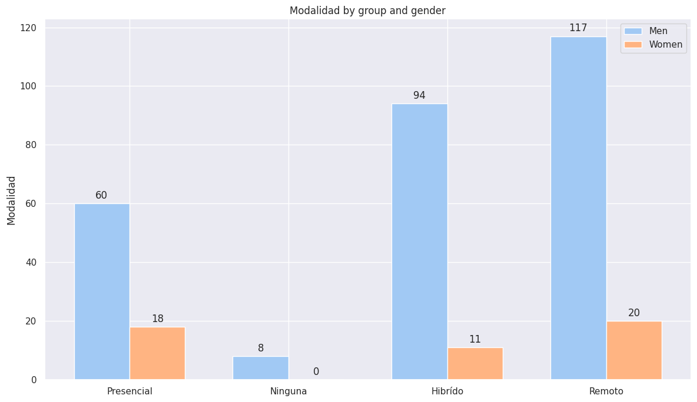
group_config = {
"title": "Education by Gender \n",
"c1_label": "Hombres",
"c2_label": "Mujeres",
"xlabel": "\n Education level.",
"ylabel": "Total count.\n",
}
make_vertical_grouped_chart(
df,
gen.get_group("MAN"),
gen.get_group("WOMAN"),
"educacion",
get_column_uniques(df, "educacion"),
group_config,
)
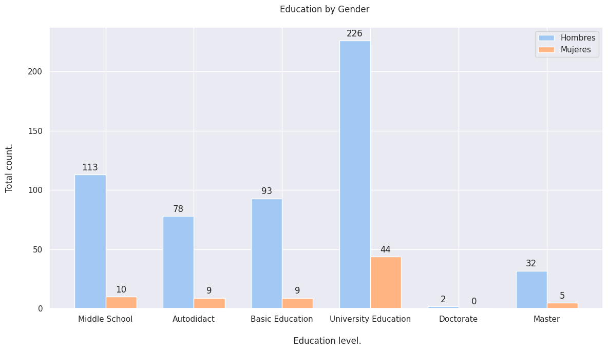
group_config = {
"title": "exp_en_IT by Gender \n",
"c1_label": "Hombres",
"c2_label": "Mujeres",
"xlabel": "\n exp_en_IT level.",
"ylabel": "Total count.\n",
}
make_vertical_grouped_chart(
df,
gen.get_group("MAN"),
gen.get_group("WOMAN"),
"exp_en_IT",
get_column_uniques(df, "exp_en_IT"),
group_config,
)
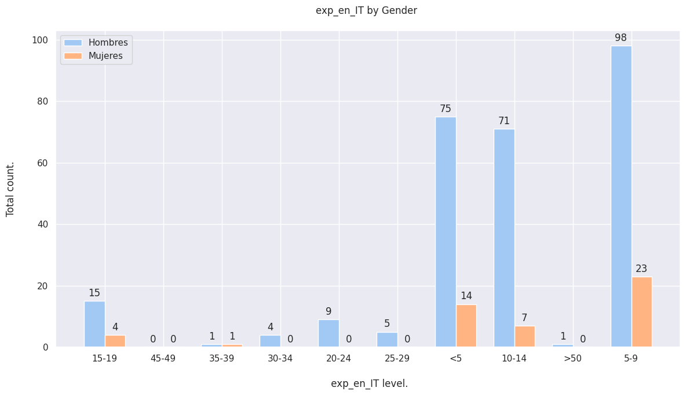
df["leng_mas_odiado"].dropna(inplace=True)
get_column_uniques(df, "1_linea_de_codigo")
['16-17',
'26-27',
'24-25',
'12-13',
'10-11',
'18-19',
'<10',
'14-15',
'20-21',
'>30',
'22-23',
'28-29']
group_config = {
"title": "1_linea_de_codigo by Gender \n",
"c1_label": "Hombres",
"c2_label": "Mujeres",
"xlabel": "\n 1_linea_de_codigo level.",
"ylabel": "Total count.\n",
}
make_vertical_grouped_chart(
df,
gen.get_group("MAN").fillna(""),
gen.get_group("WOMAN").fillna(""),
"1_linea_de_codigo",
get_column_uniques(df, "1_linea_de_codigo"),
group_config,
)
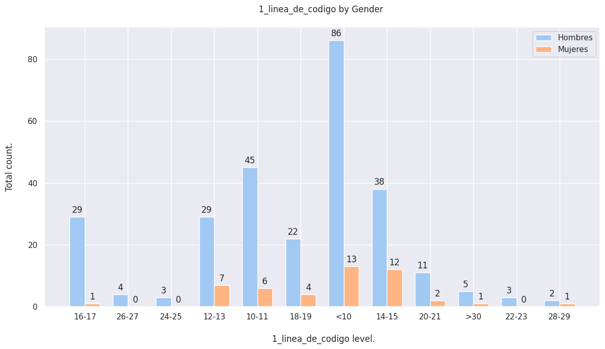
group_config = {
"title": "modalidad by Gender \n",
"c1_label": "Hombres",
"c2_label": "Mujeres",
"xlabel": "\n modalidad level.",
"ylabel": "Total count.\n",
}
make_vertical_grouped_chart(
df,
gen.get_group("MAN").fillna(""),
gen.get_group("WOMAN").fillna(""),
"modalidad",
get_column_uniques(df, "modalidad"),
group_config,
)
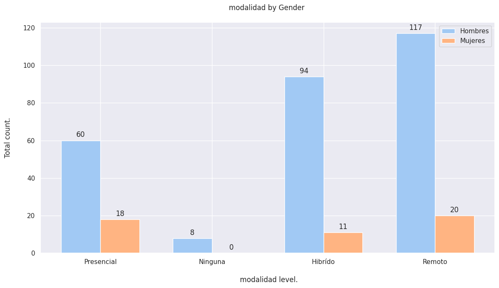
df.columns
Index(['marca_temp', 'modalidad', 'trabajo', 'tipo_de_trabajo', 'devops',
'programar_x_trabajo', 'exp_en_IT', 'exp_en_programacion',
'1_linea_de_codigo', 'educacion', 'carr_especialidades',
'imp_ed_formal', 'genero', 'edad_actual', 'salario_mensual',
'prog_script_leng', 'lib_frameworks', 'otras_lib_frameworks', 'db',
'plataformas', 'leng_fav', 'leng_mas_odiado', 'fram_fav',
'fram_mas_odiado', 'herramientas'],
dtype='object')
group_config = {
"title": "edad_actual by Gender \n",
"c1_label": "Hombres",
"c2_label": "Mujeres",
"xlabel": "\n edad_actual level.",
"ylabel": "Total count.\n",
}
make_vertical_grouped_chart(
df,
gen.get_group("MAN").fillna(""),
gen.get_group("WOMAN").fillna(""),
"edad_actual",
get_column_uniques(df, "edad_actual"),
group_config,
)
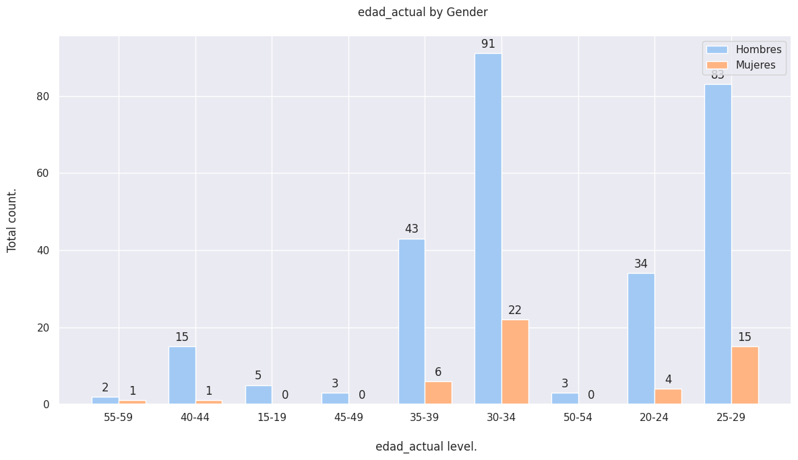
group_config = {
"title": "carr_especialidades by Gender \n",
"c1_label": "Hombres",
"c2_label": "Mujeres",
"xlabel": "\n carr_especialidades level.\n \n",
"ylabel": "\n \n \n Total count.\n",
}
make_horizontal_grouped_chart(
df,
gen.get_group("MAN").fillna(""),
gen.get_group("WOMAN").fillna(""),
"carr_especialidades",
get_column_uniques(df, "carr_especialidades"),
group_config,
)
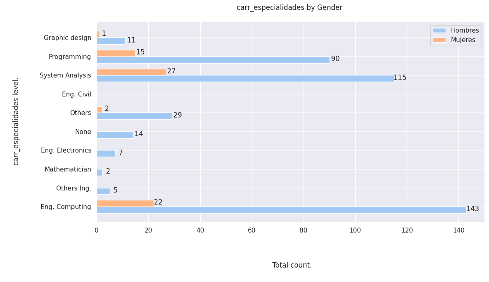
group_config = {
"title": "carr_especialidades by Gender \n",
"c1_label": "Hombres",
"c2_label": "Mujeres",
"xlabel": "\n carr_especialidades level. \n",
"ylabel": "\n Total count.",
}
make_horizontal_grouped_chart(
df,
gen.get_group("MAN").fillna(""),
gen.get_group("WOMAN").fillna(""),
"carr_especialidades",
get_column_uniques(df, "carr_especialidades"),
group_config,
)

print(
"MAN ",
get_uniques_col_count(gen.get_group("MAN").fillna(""), "carr_especialidades"),
)
print("\n" * 3)
# print("WOMAN -> ", gen.get_group('WOMAN').fillna('')["carr_especialidades"].value_counts())
MAN {'Eng. Computing': 143, 'Others Ing.': 5, 'Mathematician': 2, 'Eng. Electronics': 7, 'None': 14, 'Others': 29, 'System Analysis': 115, 'Programming': 90, 'Graphic design': 11}
df.columns
Index(['marca_temp', 'modalidad', 'trabajo', 'tipo_de_trabajo', 'devops',
'programar_x_trabajo', 'exp_en_IT', 'exp_en_programacion',
'1_linea_de_codigo', 'educacion', 'carr_especialidades',
'imp_ed_formal', 'genero', 'edad_actual', 'salario_mensual',
'prog_script_leng', 'lib_frameworks', 'otras_lib_frameworks', 'db',
'plataformas', 'leng_fav', 'leng_mas_odiado', 'fram_fav',
'fram_mas_odiado', 'herramientas'],
dtype='object')
# salario_mensual
group_config = {
"title": "salario_mensual by Gender \n",
"c1_label": "Hombres",
"c2_label": "Mujeres",
"xlabel": "\n salario_mensual level. \n",
"ylabel": "\n Total count.",
}
make_horizontal_grouped_chart(
df,
gen.get_group("MAN").fillna(""),
gen.get_group("WOMAN").fillna(""),
"salario_mensual",
get_column_uniques(df, "salario_mensual"),
group_config,
)
Segun el sueldo.
group_sueldos = df.groupby("salario_mensual")
group_sueldos.groups.keys()
dict_keys(['12 a 15 M. Gs.', '15 a 18 M. Gs.', '18 a 21 M. Gs.', '21 a 24 M. Gs.', '24 a 27 M. Gs.', '3.5 a 5 M. Gs.', '5 a 7 M. Gs.', '7 a 9 M. Gs.', '9 a 12 M. Gs.', '< MINIMO Gs.', '> 27 M. Gs.', 'MINIMO', 'MINIMO a 3.5 M. Gs.'])
for i in group_sueldos.groups.keys():
print('\n'*2)
print('='*33)
print(f'EDUCACION - SUELDO {i}')
print('='*33)
df1 =group_sueldos.get_group(i).fillna('')
df2 = group_sueldos.get_group(i).fillna('')
d1 = make_normalized_df(df1.loc[df['genero']=='MAN'],'educacion')
d2 = make_normalized_df(df2.loc[df['genero']=='WOMAN'],'educacion')
print('MAN ', d1)
print('='*33)
print('WOMAN ', d2)
=================================
EDUCACION - SUELDO 12 a 15 M. Gs.
=================================
MAN total count
categories
University Education 43.181818
Autodidact 18.181818
Middle School 13.636364
Master 13.636364
Basic Education 11.363636
=================================
WOMAN total count
categories
University Education 66.666667
Master 33.333333
=================================
EDUCACION - SUELDO 15 a 18 M. Gs.
=================================
MAN total count
categories
University Education 42.307692
Basic Education 15.384615
Middle School 15.384615
Master 15.384615
Autodidact 11.538462
=================================
WOMAN Empty DataFrame
Columns: [total count]
Index: []
=================================
EDUCACION - SUELDO 18 a 21 M. Gs.
=================================
MAN total count
categories
University Education 40.000000
Basic Education 20.000000
Middle School 20.000000
Autodidact 13.333333
Master 6.666667
=================================
WOMAN total count
categories
University Education 50.0
Autodidact 50.0
=================================
EDUCACION - SUELDO 21 a 24 M. Gs.
=================================
MAN total count
categories
University Education 33.333333
Basic Education 16.666667
Middle School 16.666667
Autodidact 16.666667
Master 11.111111
Doctorate 5.555556
=================================
WOMAN Empty DataFrame
Columns: [total count]
Index: []
=================================
EDUCACION - SUELDO 24 a 27 M. Gs.
=================================
MAN total count
categories
University Education 50.000000
Basic Education 16.666667
Middle School 16.666667
Doctorate 16.666667
=================================
WOMAN Empty DataFrame
Columns: [total count]
Index: []
=================================
EDUCACION - SUELDO 3.5 a 5 M. Gs.
=================================
MAN total count
categories
University Education 37.037037
Middle School 23.456790
Basic Education 19.753086
Autodidact 18.518519
Master 1.234568
=================================
WOMAN total count
categories
University Education 45.454545
Autodidact 18.181818
Middle School 18.181818
Basic Education 9.090909
Master 9.090909
=================================
EDUCACION - SUELDO 5 a 7 M. Gs.
=================================
MAN total count
categories
University Education 44.444444
Middle School 21.111111
Autodidact 14.444444
Basic Education 14.444444
Master 5.555556
=================================
WOMAN total count
categories
University Education 55.0
Basic Education 20.0
Middle School 20.0
Autodidact 5.0
=================================
EDUCACION - SUELDO 7 a 9 M. Gs.
=================================
MAN total count
categories
University Education 53.846154
Middle School 18.461538
Basic Education 15.384615
Autodidact 10.769231
Master 1.538462
=================================
WOMAN total count
categories
University Education 61.538462
Basic Education 15.384615
Middle School 15.384615
Autodidact 7.692308
=================================
EDUCACION - SUELDO 9 a 12 M. Gs.
=================================
MAN total count
categories
University Education 52.238806
Middle School 14.925373
Autodidact 14.925373
Basic Education 13.432836
Master 4.477612
=================================
WOMAN total count
categories
University Education 46.153846
Master 15.384615
Basic Education 15.384615
Middle School 15.384615
Autodidact 7.692308
=================================
EDUCACION - SUELDO < MINIMO Gs.
=================================
MAN total count
categories
Middle School 37.500000
Basic Education 25.000000
University Education 25.000000
Autodidact 8.333333
Master 4.166667
=================================
WOMAN Empty DataFrame
Columns: [total count]
Index: []
=================================
EDUCACION - SUELDO > 27 M. Gs.
=================================
MAN total count
categories
University Education 26.470588
Middle School 23.529412
Basic Education 20.588235
Master 17.647059
Autodidact 11.764706
=================================
WOMAN total count
categories
University Education 66.666667
Master 33.333333
=================================
EDUCACION - SUELDO MINIMO
=================================
MAN total count
categories
University Education 35.714286
Middle School 28.571429
Basic Education 21.428571
Autodidact 14.285714
=================================
WOMAN total count
categories
University Education 100.0
=================================
EDUCACION - SUELDO MINIMO a 3.5 M. Gs.
=================================
MAN total count
categories
University Education 35.000000
Middle School 25.000000
Basic Education 21.666667
Autodidact 15.000000
Master 3.333333
=================================
WOMAN total count
categories
University Education 70.0
Autodidact 30.0
for i in group_sueldos.groups.keys():
print("\n" * 2)
print("=" * 33)
print(f"MODALIDAD - SUELDO {i}")
print("=" * 33)
df1 = group_sueldos.get_group(i).fillna("")
df2 = group_sueldos.get_group(i).fillna("")
d1 = make_normalized_df(df1.loc[df["genero"] == "MAN"], "modalidad")
d2 = make_normalized_df(df2.loc[df["genero"] == "WOMAN"], "modalidad")
print("MAN ", d1)
print("=" * 33)
print("WOMAN ", d2)
=================================
MODALIDAD - SUELDO 12 a 15 M. Gs.
=================================
MAN total count
categories
Hibrído 65.217391
Remoto 17.391304
Presencial 17.391304
=================================
WOMAN total count
categories
Hibrído 33.333333
Presencial 33.333333
Remoto 33.333333
=================================
MODALIDAD - SUELDO 15 a 18 M. Gs.
=================================
MAN total count
categories
Hibrído 46.153846
Remoto 46.153846
Presencial 7.692308
=================================
WOMAN Empty DataFrame
Columns: [total count]
Index: []
=================================
MODALIDAD - SUELDO 18 a 21 M. Gs.
=================================
MAN total count
categories
Remoto 66.666667
Presencial 16.666667
Hibrído 16.666667
=================================
WOMAN total count
categories
Hibrído 100.0
=================================
MODALIDAD - SUELDO 21 a 24 M. Gs.
=================================
MAN total count
categories
Remoto 42.857143
Hibrído 42.857143
Presencial 14.285714
=================================
WOMAN Empty DataFrame
Columns: [total count]
Index: []
=================================
MODALIDAD - SUELDO 24 a 27 M. Gs.
=================================
MAN total count
categories
Remoto 75.0
Hibrído 25.0
=================================
WOMAN Empty DataFrame
Columns: [total count]
Index: []
=================================
MODALIDAD - SUELDO 3.5 a 5 M. Gs.
=================================
MAN total count
categories
Remoto 43.243243
Hibrído 35.135135
Presencial 18.918919
Ninguna 2.702703
=================================
WOMAN total count
categories
Remoto 57.142857
Presencial 28.571429
Hibrído 14.285714
=================================
MODALIDAD - SUELDO 5 a 7 M. Gs.
=================================
MAN total count
categories
Remoto 45.833333
Hibrído 33.333333
Presencial 18.750000
Ninguna 2.083333
=================================
WOMAN total count
categories
Remoto 41.666667
Presencial 41.666667
Hibrído 16.666667
=================================
MODALIDAD - SUELDO 7 a 9 M. Gs.
=================================
MAN total count
categories
Remoto 36.585366
Hibrído 31.707317
Presencial 31.707317
=================================
WOMAN total count
categories
Remoto 50.0
Presencial 37.5
Hibrído 12.5
=================================
MODALIDAD - SUELDO 9 a 12 M. Gs.
=================================
MAN total count
categories
Remoto 40.540541
Presencial 29.729730
Hibrído 29.729730
=================================
WOMAN total count
categories
Hibrído 57.142857
Remoto 28.571429
Presencial 14.285714
=================================
MODALIDAD - SUELDO < MINIMO Gs.
=================================
MAN total count
categories
Remoto 53.846154
Ninguna 30.769231
Hibrído 15.384615
=================================
WOMAN Empty DataFrame
Columns: [total count]
Index: []
=================================
MODALIDAD - SUELDO > 27 M. Gs.
=================================
MAN total count
categories
Remoto 92.307692
Hibrído 7.692308
=================================
WOMAN total count
categories
Remoto 100.0
=================================
MODALIDAD - SUELDO MINIMO
=================================
MAN total count
categories
Presencial 33.333333
Remoto 33.333333
Hibrído 33.333333
=================================
WOMAN total count
categories
Presencial 100.0
=================================
MODALIDAD - SUELDO MINIMO a 3.5 M. Gs.
=================================
MAN total count
categories
Presencial 35.483871
Hibrído 32.258065
Remoto 25.806452
Ninguna 6.451613
=================================
WOMAN total count
categories
Presencial 57.142857
Remoto 28.571429
Hibrído 14.285714
for i in group_sueldos.groups.keys():
print("\n" * 2)
print("=" * 33)
print(f"GENERO - SUELDO {i}")
print("=" * 33)
df1 = group_sueldos.get_group(i).fillna("")
df2 = group_sueldos.get_group(i).fillna("")
d1 = make_normalized_df(df1.loc[df["genero"] == "MAN"], "genero")
d2 = make_normalized_df(df2.loc[df["genero"] == "WOMAN"], "genero")
print(d1)
=================================
GENERO - SUELDO 12 a 15 M. Gs.
=================================
total count
categories
MAN 100.0
=================================
GENERO - SUELDO 15 a 18 M. Gs.
=================================
total count
categories
MAN 100.0
=================================
GENERO - SUELDO 18 a 21 M. Gs.
=================================
total count
categories
MAN 100.0
=================================
GENERO - SUELDO 21 a 24 M. Gs.
=================================
total count
categories
MAN 100.0
=================================
GENERO - SUELDO 24 a 27 M. Gs.
=================================
total count
categories
MAN 100.0
=================================
GENERO - SUELDO 3.5 a 5 M. Gs.
=================================
total count
categories
MAN 100.0
=================================
GENERO - SUELDO 5 a 7 M. Gs.
=================================
total count
categories
MAN 100.0
=================================
GENERO - SUELDO 7 a 9 M. Gs.
=================================
total count
categories
MAN 100.0
=================================
GENERO - SUELDO 9 a 12 M. Gs.
=================================
total count
categories
MAN 100.0
=================================
GENERO - SUELDO < MINIMO Gs.
=================================
total count
categories
MAN 100.0
=================================
GENERO - SUELDO > 27 M. Gs.
=================================
total count
categories
MAN 100.0
=================================
GENERO - SUELDO MINIMO
=================================
total count
categories
MAN 100.0
=================================
GENERO - SUELDO MINIMO a 3.5 M. Gs.
=================================
total count
categories
MAN 100.0